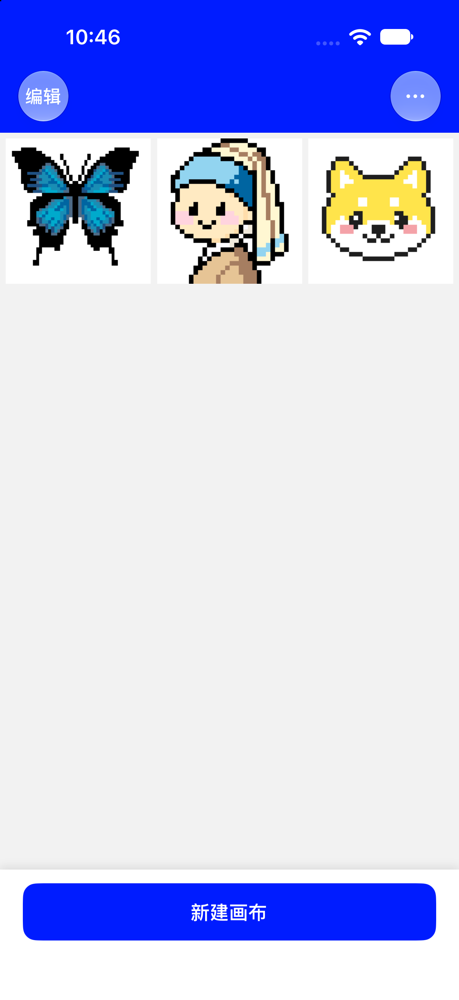
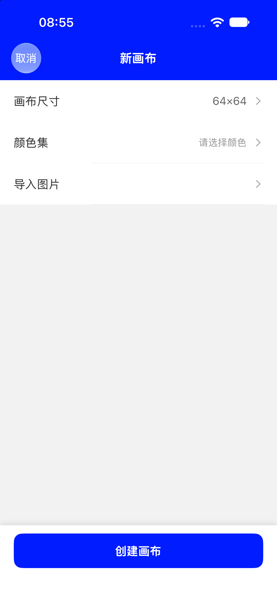
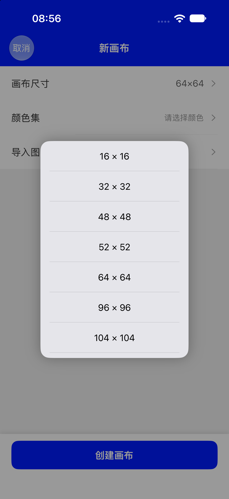
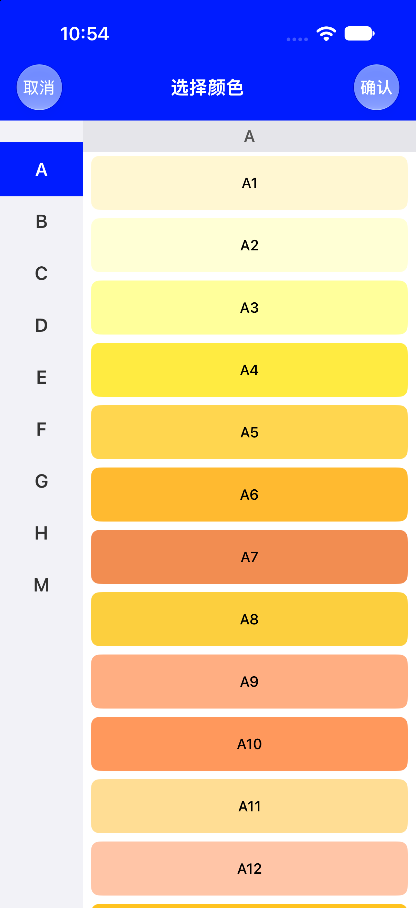
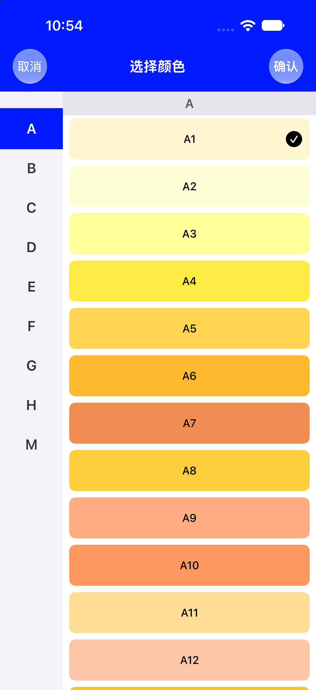
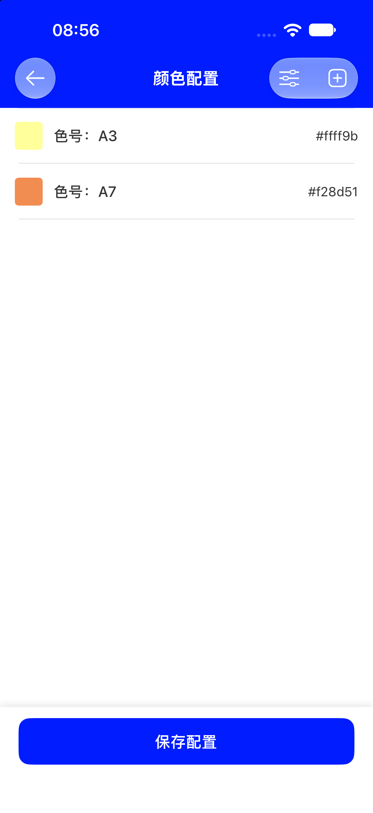
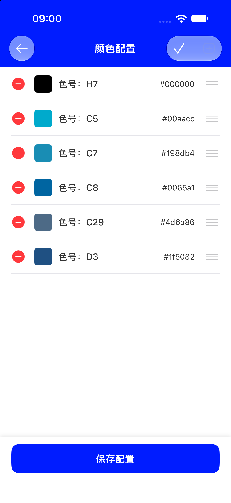
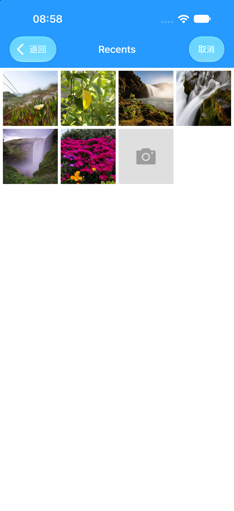
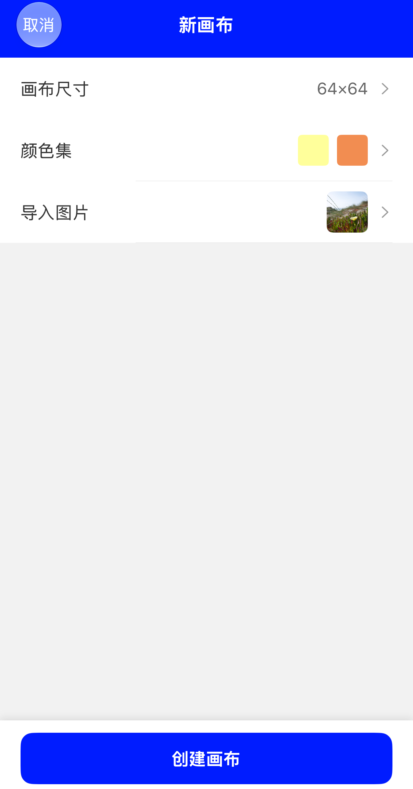

PIXELO · 使用教程
创建画布
选好尺寸和颜色，就能开始画。也可以挑一张照片，让 App 按你选的分辨率和颜色先打好像素底稿。
- 13 种尺寸
- 221 个色号
- 照片转像素
- 创建即保存
从首页新建
-
点首页底部的「新建画布」
首页是作品列表，已有的画布按三列缩略图排列。底部蓝色按钮就是入口，点一下进入标题为「新画布」的设置页。

首页底部的「新建画布」（实机截图） -
认识「新画布」页的三行设置
从上到下依次是画布尺寸、颜色集、导入图片。左上角「取消」可退出，最下方蓝色按钮是「创建画布」。

「新画布」页：尺寸已默认 64×64，颜色集尚未选择（实机截图） -
画布尺寸 · 必选，已有默认值 决定整张画有多少格，默认 64×64。
-
颜色集 · 必选，至少 1 种 挑出这张画要用的颜色，之后就是绘画页底部的色板。
-
导入图片 · 可跳过 不选就是一张空白画布，从零开始画。
-
先定画布尺寸
尺寸就是「横竖各多少格」。格子越多越能画细节，但点起来也越费眼。目前没有修改画布尺寸的入口，创建前先想好。
可选的 13 种正方形尺寸（蓝色为默认）：

- 默认尺寸
- 64 × 64
- 最大尺寸
- 1024 × 1024
- 形状
- 正方形，N × N 格
- 自定义输入
- 不支持，只能从列表里选
第一次玩建议 16 × 16 或 32 × 32，画个小图标很快有成就感；64 × 64 适合完整的头像、小动物。想导入照片，尺寸越大细节越保留。
一是导入图片会被压缩成这么多格；二是画布宽超过 52 格时，导出图纸会多一步「分块 / 整体」的选择。详见导出图片教程。
选出这张画要用的颜色
这里选的就是整张画的调色板：创建后它们会原样出现在绘画页底部，随时点着换色。
-
点「颜色集」挑色号
第一次进入会自动打开「选择颜色」页：左侧按 A / B / C / D / E / F / G / H / M 分组，右侧是一格格的色卡，标着色号如
A1、A7。点一下出现黑色 ✓，可以多选，选完点右上「确认」。

左：按分组浏览色号；右：点选后色卡出现 ✓（实机截图） -
在「颜色配置」页管理已选颜色
确认后回到的是「颜色配置」页，这里能看到每个色号的名称和色值（如
#ffff9b）。右上角的 ＋ 继续加颜色；点滑块图标进入编辑态，可以删除不用的颜色、拖动三横线把手调整顺序；长按某一行还能改「色号名称」。改完点「保存配置」。

左：已选 2 色；右：编辑态可删除与排序（实机截图） i关于 221 个 MARD 色号颜色来自 App 内置的 MARD 色卡，共 221 个固定色值，可以改「色号名称」，但不能自定义新颜色、也不能改色值，也没有带名字的预设配色方案。至少选 1 种，否则点「创建画布」会提示「至少选择一种颜色」。
-
回到「新画布」页确认
「颜色集」这一行会显示已选颜色的小色块（最多显示 5 个，再多会显示
+N），说明这张画的调色板已经就位。✓以后想换颜色怎么办不用重画。进入绘画页后点右上「⋯ → 颜色配置」，打开的就是同一个页面、同一套色号，加色、删色、排序都一样，保存后立即生效。见绘画教程 · 配置颜色。
让照片直接变成像素底稿
这一步是可选的。App 会按你刚选的尺寸和颜色，把照片重绘成一格一格的像素画；生成后仍然可以拿画笔继续改。
-
点「导入图片」，选一张照片或现拍
会打开系统照片选择器，从相册里挑一张，也可以当场用相机拍。选完进入正方形裁剪：比例锁定，能双指缩放、拖动调整构图，确认后回到创建页。

从相册选图（实机截图） -
确认三行设置，点「创建画布」
此时创建页上尺寸、颜色集色块、导入图片缩略图三项都齐了。点底部「创建画布」，App 会立刻把照片转成像素格并打开绘画页。

配置完成态：尺寸、颜色集、导入图片都已选好（实机截图）
缩到画布大小
照片按所选尺寸做最近邻缩放，例如 64×64 就是 64 × 64 个格子，每格对应一个像素。
保留明暗层次
用 Atkinson 抖动处理渐变和阴影，让颜色种类不多时也能看出轮廓。
换成你选的色号
每一格取颜色最接近的已选色号填色，所以整张画只会用到你选中的那几种颜色。
多选几种颜色、把尺寸调大，细节会明显变多。改了尺寸或颜色集后，转换结果也会跟着变。不支持自动抠图 / 去背景，照片里不想要的部分，进绘画页用橡皮擦抹掉即可。
创建之后会发生什么
- 直接打开绘画页导入得到的像素画已经铺在画布上，画笔、橡皮、取色、撤销都能接着用。
- 画板同时出现在首页以缩略图形式排在列表最前，画布没有名字，也不用手动「保存」。
- 编辑自动保存之后落笔、撤销、移动画布等操作都会自动写入，退出再进来还在。
创建时卡住了？看这里
能不选颜色、也不导入图片吗？
图片完全可以跳过，会得到一张空白画布。但颜色至少选 1 种，否则点「创建画布」会弹出「至少选择一种颜色」。
尺寸选错了能改吗？能自己输入一个尺寸吗？
目前只能从 13 种预设里挑，没有自定义输入；创建后也没有修改尺寸的入口。尺寸不满意的话，重新新建一张画布，把旧画板在首页「编辑」里删掉即可。
导入后颜色跟照片差很多
这是正常的：App 只能用你选中的那几种色号来还原照片。回到「颜色集」多加几种接近照片的颜色（例如深浅不同的黄、灰、肤色），或把画布尺寸调大，效果会更接近。
导入的图片还能继续编辑吗？
能。导入只是生成初始像素，进绘画页之后和普通画布没有区别，可以落笔改色、橡皮擦除、取色、撤销重做，也能再导出。
颜色选少了 / 选多了，之后能调整吗？
能，在绘画页右上「⋯ → 颜色配置」里增删和排序，和创建时是同一套页面。注意它换的是调色板，已经画上去的像素不会自动变色。
新建的画布叫什么？要不要手动保存？
画布没有名称，首页用缩略图区分。点「创建画布」的那一刻就已入库，之后每次落笔、撤销、移动画布都会自动保存，直接返回首页即可。
画布已经铺好了
尺寸定大小 → 颜色定调色板 → 图片打底稿。
接下来，去绘画教程认识画笔和工具栏吧。